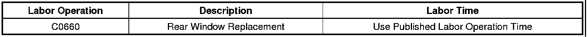

Audio - Poor Radio Reception/Static Interference
TECHNICALBulletin No.: 03-08-44-005L
Date: April 18, 2012
Subject: Poor Radio Reception or Radio Static/Increased Interference with Rear Window Defogger On or Some Rear Window Defogger Grids May be Inoperative
Models:
2004-2005 Buick Century, LeSabre, Park Avenue, Regal
2005-2009 Buick Allure (Canada Only)
2005-2012 Buick LaCrosse
2006-2011 Buick Lucerne
2011-2012 Buick Regal
2012 Buick Verano
2004 Cadillac Seville
2004-2005 Cadillac DeVille
2004-2012 Cadillac CTS, SRX
2005-2011 Cadillac STS
2006-2011 Cadillac DTS
2004 Chevrolet Corvette
2004-2007 Chevrolet Malibu (Classic Only), Monte Carlo
2004-2010 Chevrolet Aveo, Epica, Optra
2004-2012 Chevrolet Impala
2010-2012 Chevrolet Camaro
2004 Oldsmobile Alero
2004-2005 Pontiac GTO
2004-2006 Pontiac Grand Am
2004-2008 Pontiac Grand Prix
2005-2010 Pontiac G6, G3/Wave (Canada Only)
2006-2009 Pontiac Solstice
2007-2009 Saturn SKY
2010 Saturn AURA
Supercede:
This bulletin is being revised to change the recommended repair. Please discard Corporate Bulletin Number 03-08-44-005K (Section 08 - Body and Accessories).
Condition
Some customers may comment that the radio has poor reception or radio static/increased interference when the rear window defogger is turned on. Also, some rear window defogger grids may be inoperative.
Cause
This condition may be due to microscopic cracks in the electrically heated grids of the rear window defogger. These cracks may cause electrical interference when the rear defogger is on and this could affect radio reception.
Background
The addition of vertical grid lines to the heated back window defogger circuits has made it difficult to detect broken defogger grid lines. In the past, it was a simple matter to use a voltmeter to check the continuity of each grid line in order to locate a non-functional line. New design back windows have two vertical grid lines that connect all of the horizontal grid lines together, thereby providing alternate routes for the electrical current to follow. This makes the old test method ineffective.
Materials Required
- A small ball of fine steel wool Type 00 or equivalent
- Optional - A strip of liquid crystal heat sensitive paper, 51 mm x 305 mm (2 in x 12 in) or similar size (Contact Edmund Scientific at 800-728-6999 for part number CR30723-70 or go to www.scientificsonline.com), or
- Optional - A portable infrared thermometer
Correction
There are three distinct zones across the back window that must be checked. They are:
- the driver's side outboard of the two vertical lines
- the passenger side outboard of the two vertical lines
- the central zone that falls between the two vertical lines
To detect a broken grid line in any of the above three zones and to isolate the exact location of the break, perform the following:
Caution
- Approved safety glasses and gloves should be worn when performing this procedure to reduce the chance of personal injury.
- Cover the rear shelf area to prevent damage to the interior trim material.
1. Start the engine and turn on the back window defogger.
Important
The first place to check should be the driver side segment 2 to 3 lines up from the bottom about 380-385 mm (15-15.2 in) from the buss bar.
2. Take the ball of fine steel wool and twist one end to a point. Move the point slowly across each grid line. Be sure to start at the far side of the zone and move it to the opposite side of the zone. When you bridge the grid line break with the steel wool, you will see a small spark. Repeat the test over the same area to be sure you have accurately located the break. Mark the exact location of the grid line break. Repeat this portion of the test for each grid line. If you do not see a spark at any point, it is possible that there are two breaks in the same line and zone. Close visual inspection using a magnifying glass may be the only way to locate breaks in this case.
3. The following are provided as a alternative way to detect a non-functional grid line. If available, use in addition to the steel wool.
1. Method using liquid crystal heat sensitive paper.
Important
The first part of the test must be completed quickly before the entire surface of the back window becomes warm.
1. From outside the vehicle, place the heat sensitive paper (dull surface in contact with the glass) against the top driver side grid line. Start the engine and turn on the back window defogger. A distinct color change will take place at each conductive grid line. Repeat for the bottom grid lines until they have all been checked in the driver side zone.
2. Repeat the process for the passenger side and center area zones.
3. If no color change is noted for a grid line, place a crayon or china marker check mark beside it. Mark each grid line in the zone where it is non-conductive and therefore not heating up. More than one broken grid line may be found.
2. Method using a portable infrared thermometer.
1. Start the engine and turn on the rear back window defogger.
2. From inside the vehicle, start at the top driver side grid line and slowly run the portable infrared thermometer vertically down the rear window contacting each grid line. You should be able to see a district variation in temperature readings.
3. Mark each grid line in the zone where it is non-conductive and, therefore, not heating up. More than one broken grid line may be found.
4. Repeat the process for the passenger side and center area zones.
4. If a broken defogger grid is detected, the recommended repair is rear window replacement.
Warranty Information

For vehicles repaired under warranty, use the table.

Disclaimer